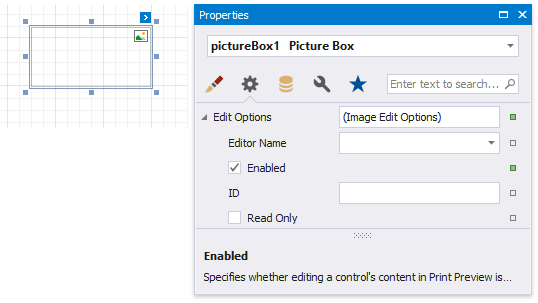

Picture Box
Overview
Use the Picture Box control to add images to a report. The images can have one of the following formats: BMP, JPG, JPEG, GIF, TIF, TIFF, PNG, ICO, DIB, RLE, JPE, JFIF, EMF, WMF, SVG.
To add the Picture Box control to a report, drag the Picture Box item from the Toolbox onto the report's area.
Specify one of the following properties to set an image:
- Image Source
Save the image to the report definition. - Image Url
Only save a path to the image.

Assign an External Image
Click the Image Source / Image URL property's ellipsis button to invoke the Open File dialog.

The selected image or its URL is saved to the report definition .repx file.
Assign an Image from the Report's Image Collection
Set the report's Image Resources property.

Click the Picture Box's smart tag. In the invoked menu, click the Expression option's ellipsis button to open the Expression Editor. Choose an image from the Images collection:
Bind a Picture Box to Data
Use one of the following techniques to add the Picture Box control that obtains an image from a data source.
Click the control's smart tag. In the invoked menu, expand the Expression drop-down list for the Image Source property and select a data field.
You can bind the Image Url property to data in a similar way. In this instance, the URL that specifies the image location is obtained from the data source.
Click the Expression option's ellipsis button to invoke the Expression Editor. Use this editor to construct a binding expression that can include two or more data fields.
Drag an image data field from the report's Field List and drop it onto a report band.
Right-click a data field in the Field List and drop it onto a report band. Select the Picture Box item in the invoked context menu.
See the Bind Report Controls to Data topic for more information about how to create data-aware controls.
SVG Support Limitations
The Picture Box control does not support the following SVG content:
- Gradient colors
- Text (you can convert text to curves as a workaround)
- Animations
- External .css styles
Export (except for PDF) has the following limitations:
SVG images are converted to metafiles because document viewers may not support SVG format.
SVG images are exported as PNG in the Microsoft Azure environment.
The Medium Trust permission level does not support SVG.
Image Size Modes
Use the Sizing property to specify an image's position in the Picture Box.

This control supports the following image size modes:
Normal
The image is displayed at the top left corner with its original dimensions. The image is clipped if it does not fit the control's boundaries.

Stretch Image
The image is stretched or shrunk to fill the control's width and height.
Auto Size
The control's dimensions are adjusted to the image's size.

Zoom Image
The image is resized proportionally without clipping it to fit the control dimensions.

Squeeze
The image is centered and shown full-size if the control dimensions exceed the image size. Otherwise, the image is resized to fit the control's boundaries.

Tile
The original image is replicated within the control starting from the top left corner. The replicated image is clipped if it does not fit the control's boundaries.

You can also use the Image Alignment property in the Normal, Squeeze and Zoom Image modes to specify the alignment in relation to the control's boundaries.
Image Orientation
The Use Image Metadata option allows you to specify whether to take into account the Exif metadata orientation of the image displayed in the Picture Box control.
The Exif orientation property helps applications display the image in its intended orientation, regardless of how it was captured by the camera. This property contains a numerical value that specifies how much a saved image should be rotated to achieve a correct viewing angle.
For example, if you capture a photo in portrait mode (holding the camera vertically), the camera may save the image in a landscape orientation. This can lead to the image appearing sideways or upside down when viewed on a computer or other devices.
When you set Use Image Metadata to true, the Picture Box control reads the orientation property value and displays the image according to this value.
The example below illustrates the use of the Use Image Metadata option. The Picture Box displays an image whose orientation in Exif metadata is 90 degrees clockwise. If you enable the Use Image Metadata option property, the image is rotated 90 degrees clockwise to orientate it correctly.
Interactivity
You can add a possibility to load/change an image and/or draw a signature in a picture box when it is displayed in Print Preview. To do this, enable the Edit Options | Enabled property.

Click the picture box in a previewed document and an editor invokes.
Tip
You can draw borders for the picture box to make the editor visible in Print Preview, if an image is not specified.
Refer to the Content Editing in Print Preview topic for details and to the Interactive E-Forms tutorial to see how the E-Form demo report uses this picture box mode.